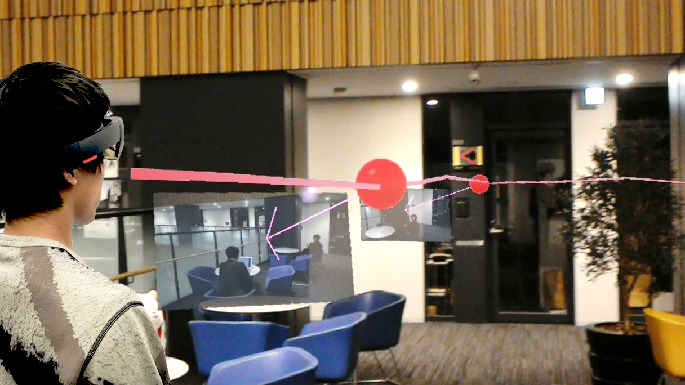

他者の観察行動を可視化するARインタフェース

日常生活の中で他者の観察行動からモノの見方についての気付きを得る事がしばしばある．本研究ではモノの見方についての自発的な発見を促すことを目的とし，他者の観察行動をAR（Augmented Reality）の技法によって実空間上で可視化する手法を提案する．提案手法では可視化の対象となる人物の視点の位置・方向および視点画像を記録した後，記録された観察行動をARデバイスにより同一空間上に重畳表示する．これにより，過去にその人物が何をどのように見ていたがわかるようになる．また同一のアングルで観察することでそれを追体験することもできる．
岩永 真斗, 橋本 直, “他者の観察行動を可視化するARインタフェース”, 情報処理学会インタラクション2018論文集, pp.875-876,（2018年3月5-7日, 学術総合センター）
SHoloLens, Unity
http://kougaku-lab.org/archives/615